Laporan Proyek Akhir Semester
Aplikasi keuangan pribadi berbasis Java Server Pages
Melanjutkan proyek Midterm Dompetku dengan arsitektur JSP, Servlet, JDBC, dan MySQL. Delapan modul CRUD penuh, profil pengguna, dashboard analitik, laporan bulanan, serta antarmuka responsif yang dirancang untuk membuat pengelolaan uang terasa sederhana.
Daftar isi
Alur pembahasan dari konsep, database, fitur, hingga pengujian.
Pendahuluan
Mengapa Dompetku dibangun, dan apa yang ingin dicapai.
Dompetku adalah aplikasi web pencatatan keuangan pribadi yang membantu pengguna memahami ke mana uangnya pergi. Proyek ini merupakan kelanjutan dari aplikasi Dompetku pada Midterm, yang sebelumnya dibangun dengan Laravel. Pada Exam 2, aplikasi yang sama dibangun ulang menggunakan Java Server Pages (JSP) agar seluruh alur MVC, session, validasi, dan akses database dapat dikerjakan langsung di atas platform Java.
Aplikasi berjalan lokal di Apache Tomcat 8.5 dengan database MySQL/MariaDB dari XAMPP.
Pengguna dapat registrasi, login, lalu mengelola transaksi, kategori, dompet, budget,
target tabungan, setoran, utang/piutang, dan transaksi berulang. Laporan bulanan dapat
diunduh sebagai CSV atau PDF. Data setiap pengguna terisolasi berdasarkan user_id
dari session.
Form transaksi dengan pemilihan jenis, kategori adaptif, dompet, tanggal, dan pratinjau nominal secara langsung.
Dashboard arus kas, budget per kategori, target tabungan, serta komitmen utang dan piutang dalam satu tempat.
Laporan bulanan berisi komposisi pengeluaran, tren 6 bulan, pengeluaran terbesar, dan ekspor CSV/PDF.
Password PBKDF2, CSRF token, session HttpOnly, dan seluruh query dibatasi oleh pemilik data.
demo@dompetku.test / password.
Data demo berisi 6 bulan transaksi, 13 kategori, 4 dompet, 18 budget, 4 target, 14 setoran,
5 utang/piutang, dan 5 jadwal berulang sehingga dashboard dan laporan langsung terisi.
Arsitektur dan teknologi
Pemisahan view, controller, dan data access di atas JSP dan Servlet.
| Lapisan | Teknologi | Peran |
|---|---|---|
| View | JSP 2.3, JSTL 1.2, EL, tag file | Merender HTML, perulangan data, format rupiah/tanggal, komponen ikon. |
| Controller | Servlet 3.1 (@WebServlet) | Routing per modul, validasi input, session, flash message, dan redirect. |
| Data access | DAO + JDBC, PreparedStatement | Query terparameterisasi, pemetaan ResultSet ke model, transaksi database. |
| Connection pool | Tomcat JDBC Pool | Mengelola koneksi database (maks. 20) agar dashboard tidak membuka koneksi baru terus-menerus. |
| Database | MySQL / MariaDB 10.4 (XAMPP) | Menyimpan 9 tabel relasional dengan InnoDB dan foreign key. |
| Server | Apache Tomcat 8.5 | Servlet container, JSP compiler, session, deployment WAR. |
| UI | CSS kustom + Chart.js 4 | Design system, mode gelap, grafik arus kas dan kategori. |
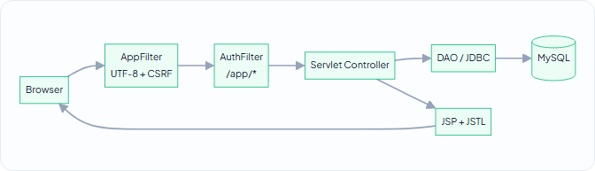
Setiap request melewati filter keamanan. Halaman di bawah /app/* hanya dapat diakses
setelah login. Servlet memanggil DAO, menyiapkan atribut request, lalu meneruskan ke JSP di
/WEB-INF/views agar tidak bisa diakses langsung dari browser.
saved_amount pada tabel goals ikut berubah dalam satu commit.ON DELETE SET NULL agar riwayat transaksi tidak hilang saat kategori dihapus.Desain database
Sembilan entitas, relasi satu-ke-banyak, dan integritas referensial.
Model konseptual berfokus pada entitas dan relasi. Garis dengan simbol one-to-many menunjukkan bahwa satu pengguna memiliki banyak data turunan, sedangkan transaksi berelasi ke satu kategori dan satu dompet.
| Relasi | Kardinalitas | Keterangan |
|---|---|---|
| users → categories | 1 : N | Satu pengguna memiliki banyak kategori; kategori terhapus saat user dihapus (CASCADE). |
| users → wallets | 1 : N | Satu pengguna memiliki banyak dompet dengan saldo awal masing-masing. |
| users → transactions | 1 : N | Transaksi adalah inti aplikasi; setiap transaksi milik tepat satu pengguna. |
| wallets → transactions | 1 : N | Setiap transaksi mengubah saldo satu dompet. |
| categories → transactions | 1 : N (opsional) | category_id nullable; jika kategori dihapus, transaksi tetap ada. |
| users → budgets | 1 : N | Satu budget per kategori per bulan, dijaga unique constraint. |
| categories → budgets | 1 : N | Budget hanya untuk kategori pengeluaran. |
| users → goals | 1 : N | Target tabungan dengan nominal target dan dana terkumpul. |
| goals → goal_deposits | 1 : N | Riwayat setoran; hapus target menghapus setoran (CASCADE). |
| users → debts | 1 : N | Catatan utang (payable) dan piutang (receivable). |
| users → recurring_transactions | 1 : N | Jadwal transaksi berulang dengan status aktif dan tanggal berikutnya. |
ON DELETE CASCADE; relasi kategori pada transaksi dan jadwal memakai
ON DELETE SET NULL agar riwayat tidak hilang. Unique constraint mencegah
kategori ganda dan budget ganda pada bulan yang sama.
Kolom, tipe data, dan constraint utama. DDL lengkap tersedia di database/schema.sql.
| id | INT AUTO_INCREMENT | PK |
| name | VARCHAR(100) | |
| VARCHAR(150) | UQ | |
| password_hash | VARCHAR(255) | |
| created_at | TIMESTAMP |
| id | INT AUTO_INCREMENT | PK |
| user_id | INT → users.id | FK |
| name | VARCHAR(60) | |
| type | ENUM('income','expense') | |
| color | CHAR(7) | |
| icon | VARCHAR(40) | |
| created_at | TIMESTAMP |
| id | INT AUTO_INCREMENT | PK |
| user_id | INT → users.id | FK |
| name | VARCHAR(80) | |
| type | ENUM('cash','bank','ewallet') | |
| initial_balance | DECIMAL(15,2) | |
| color | CHAR(7) | |
| created_at | TIMESTAMP |
| id | INT AUTO_INCREMENT | PK |
| user_id | INT → users.id | FK |
| wallet_id | INT → wallets.id | FK |
| category_id | INT NULL → categories.id | FK |
| type | ENUM('income','expense') | |
| amount | DECIMAL(15,2) | |
| transaction_date | DATE | |
| note | VARCHAR(255) | |
| created_at | TIMESTAMP |
| id | INT AUTO_INCREMENT | PK |
| user_id | INT → users.id | FK |
| category_id | INT → categories.id | FK |
| month | DATE (awal bulan) | UQ |
| amount | DECIMAL(15,2) | |
| created_at | TIMESTAMP |
| id | INT AUTO_INCREMENT | PK |
| user_id | INT → users.id | FK |
| name | VARCHAR(100) | |
| target_amount | DECIMAL(15,2) | |
| saved_amount | DECIMAL(15,2) | |
| deadline | DATE NULL | |
| color | CHAR(7) |
| id | INT AUTO_INCREMENT | PK |
| goal_id | INT → goals.id | FK |
| amount | DECIMAL(15,2) | |
| deposit_date | DATE | |
| note | VARCHAR(255) | |
| created_at | TIMESTAMP |
| id | INT AUTO_INCREMENT | PK |
| user_id | INT → users.id | FK |
| type | ENUM('payable','receivable') | |
| counterpart | VARCHAR(100) | |
| amount | DECIMAL(15,2) | |
| paid_amount | DECIMAL(15,2) | |
| due_date | DATE NULL | |
| note | VARCHAR(255) |
| id | INT AUTO_INCREMENT | PK |
| user_id | INT → users.id | FK |
| wallet_id | INT → wallets.id | FK |
| category_id | INT NULL → categories.id | FK |
| name | VARCHAR(100) | |
| type | ENUM('income','expense') | |
| amount | DECIMAL(15,2) | |
| frequency | ENUM('daily','weekly','monthly') | |
| next_date | DATE | |
| active | TINYINT(1) |
(user_id, transaction_date) mempercepat filter bulan dan urutan tanggal.(user_id, name, type) mencegah kategori ganda dengan nama sama.(user_id, category_id, month) memastikan satu budget per kategori per bulan.wallet_id, category_id, dan goal_id menjaga performa join dan validasi referensi.amount > 0, paid_amount <= amount, saved_amount >= 0, dan DAY(month) = 1 menjaga integritas meski data diubah langsung lewat SQL.Daftar fitur
Setiap modul memiliki Create, Read, Update, dan Delete yang dapat diuji.
Delapan modul di bawah ini memiliki operasi Create, Read, Update, dan Delete yang lengkap serta tabel atau resource tersendiri. Modul profil pengguna ditambahkan sebagai fitur kesembilan dengan operasi Read/Update. Autentikasi, dashboard, dan laporan disajikan sebagai fitur pendukung.
| No | Modul | Create | Read | Update | Delete | Catatan |
|---|---|---|---|---|---|---|
| 1 | Transaksi | ✓ | ✓ | ✓ | ✓ | Filter bulan, jenis, kategori, dompet, kata kunci, pagination. |
| 2 | Kategori | ✓ | ✓ | ✓ | ✓ | Warna, ikon, jumlah pemakaian, unique per jenis. |
| 3 | Dompet | ✓ | ✓ | ✓ | ✓ | Saldo berjalan otomatis; delete dijaga jika ada transaksi. |
| 4 | Budget | ✓ | ✓ | ✓ | ✓ | Realisasi per bulan, status aman/hampir/over. |
| 5 | Target tabungan | ✓ | ✓ | ✓ | ✓ | Progress ring, tenggat, sisa target. |
| 6 | Setoran tabungan | ✓ | ✓ | ✓ | ✓ | Edit nominal otomatis menyesuaikan saved amount. |
| 7 | Utang & piutang | ✓ | ✓ | ✓ | ✓ | Status unpaid/partial/overdue/paid + pembayaran. |
| 8 | Transaksi berulang | ✓ | ✓ | ✓ | ✓ | Harian/mingguan/bulanan, jeda, jalankan. |
| 9 | Profil pengguna | — | ✓ | ✓ | — | Ubah nama/email dan ganti password. |
Registrasi otomatis membuat 13 kategori dan 3 dompet awal; login/logout dengan session dan CSRF.
Empat kartu ringkasan, grafik arus kas 6 bulan, donut kategori, arus kas harian, budget, target, dan jatuh tempo.
Rekap pemasukan/pengeluaran, komposisi kategori, tren 6 bulan, pengeluaran terbesar, realisasi budget, ekspor CSV/PDF.
Mode terang/gelap tersimpan di localStorage, layout adaptif dari desktop hingga ponsel.
goal_deposits, halaman riwayat, serta operasi create/read/update/delete
yang memengaruhi tabel goals dalam satu transaksi database. Profil pengguna
menjadi modul tambahan dengan operasi read/update identitas dan password.
Screenshot dan penjelasan
Tangkapan layar diambil dari aplikasi yang berjalan dengan data demo.
Halaman login memakai layout split-screen: panel kiri menjelaskan nilai aplikasi dan menampilkan pratinjau kartu keuangan, sedangkan panel kanan berisi form. Login memvalidasi email/password dengan PBKDF2, merotasi session, lalu mengarahkan ke dashboard. Tombol Isi akun demo otomatis membantu saat presentasi.
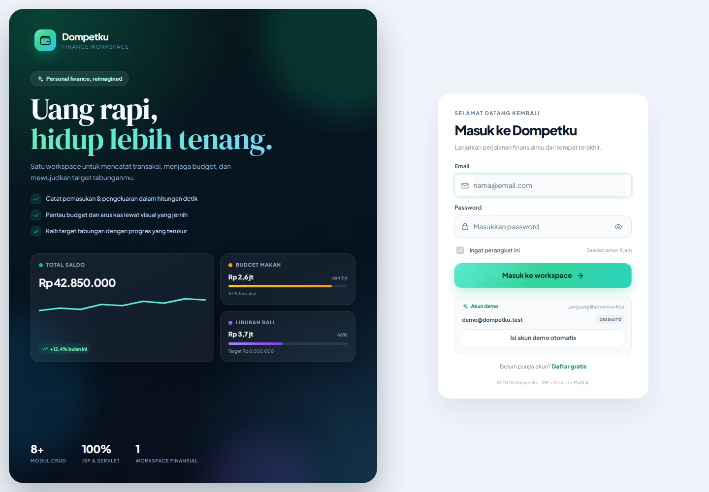
Registrasi meminta nama, email, password, dan konfirmasi. Sistem memvalidasi format email,
kekuatan password (minimal 8 karakter, huruf, angka, dan simbol), lalu membuat kategori serta dompet
default melalui DefaultDataService. Halaman registrasi memiliki komponen yang
sama sehingga tetap konsisten secara visual.
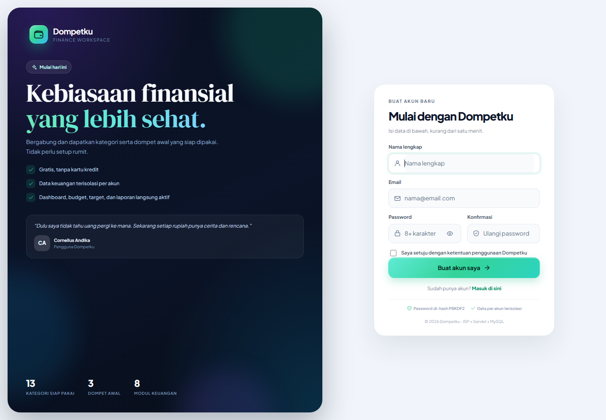
Dashboard adalah pusat informasi. Empat kartu utama menampilkan total saldo, pemasukan, pengeluaran, dan rasio tabungan bulan terpilih. Perbandingan dengan bulan sebelumnya dihitung otomatis dan ditampilkan sebagai chip persentase. Grafik batang memperlihatkan arus kas enam bulan, donut chart memecah pengeluaran per kategori, dan grafik garis menampilkan ritme harian.
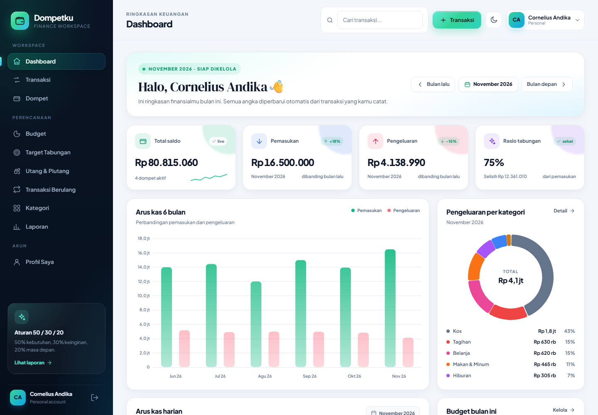
Bagian bawah dashboard memuat arus kas harian, ringkasan budget dengan progress bar,
transaksi terbaru, target tabungan, serta komitmen yang mendekati jatuh tempo. Semua
angka berasal dari query agregasi yang dibatasi user_id, bukan data statis.
Halaman transaksi menampilkan 10 data per halaman. Pengguna dapat memfilter berdasarkan bulan, jenis, kategori, dompet, dan kata kunci. Ringkasan pemasukan/pengeluaran mengikuti filter bulan yang aktif. Setiap baris memiliki aksi edit dan hapus; penghapusan memakai modal konfirmasi agar tidak terjadi kecelakaan.
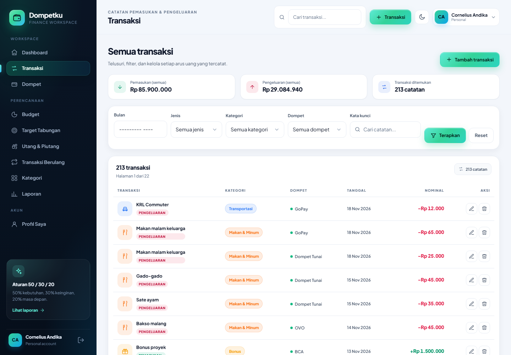
Form transaksi memakai segmented control untuk memilih pengeluaran atau pemasukan. Pilihan kategori difilter otomatis sesuai jenis transaksi melalui JavaScript, lalu divalidasi ulang di server. Panel pratinjau menampilkan nominal, dompet, kategori, dan tanggal secara langsung. Saldo dompet tidak perlu diisi karena dihitung dari transaksi.
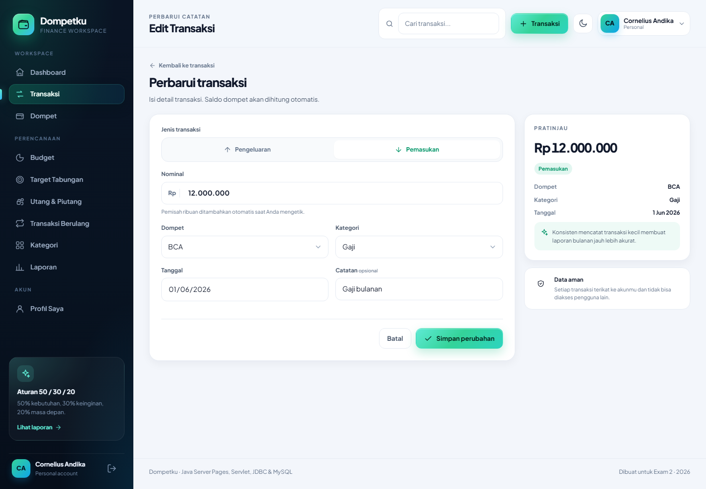
Kategori dipisahkan antara pengeluaran dan pemasukan. Setiap kartu menampilkan ikon, warna, nama, dan jumlah transaksi yang memakai kategori tersebut. Form kategori menyediakan pemilih warna, palet cepat, dan grid ikon. Nama kategori unik per jenis, sehingga tidak ada duplikat. Saat kategori dihapus, transaksi terkait tetap tersimpan dengan kategori NULL.
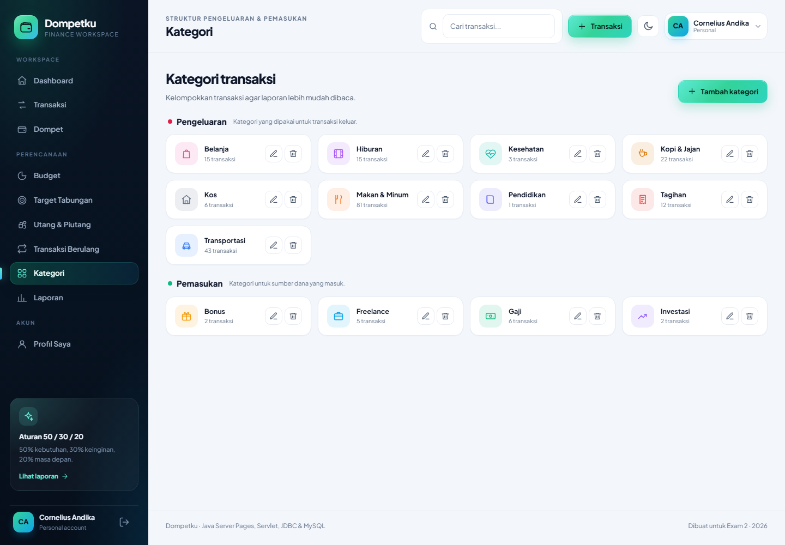
Dompet mendukung tiga tipe: tunai, bank, dan e-wallet. Kartu dompet menampilkan saldo
berjalan yang dihitung dari initial_balance ditambah seluruh pemasukan dan
dikurangi seluruh pengeluaran pada dompet tersebut. Warna kartu dapat diubah. Penghapusan
dompet yang sudah memiliki transaksi ditolak di sisi server untuk menjaga integritas.
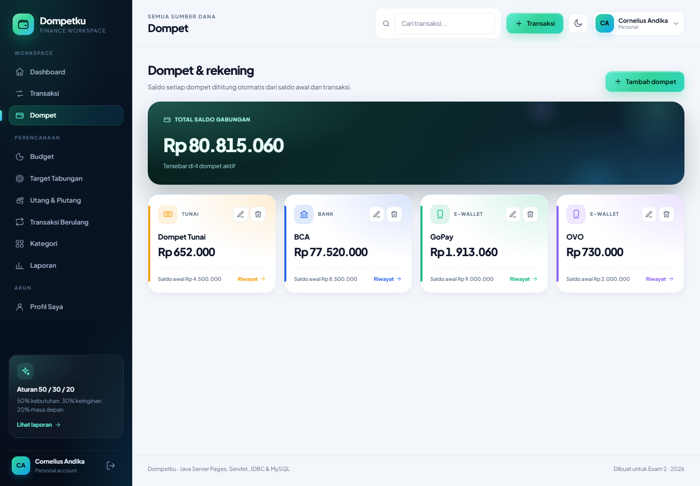
Budget menetapkan batas pengeluaran per kategori untuk bulan tertentu. Realisasi dihitung dari transaksi pengeluaran pada bulan tersebut. Progress bar berubah warna sesuai status: hijau (aman), kuning (≥80%, hampir habis), dan merah (≥100%, over). Unique constraint mencegah dua budget untuk kategori dan bulan yang sama.
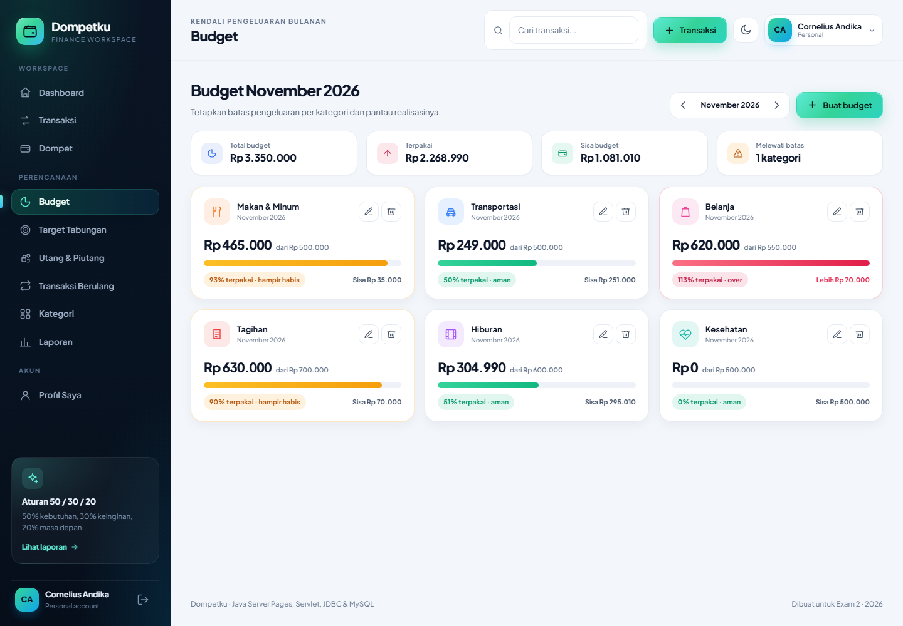
Setiap target memiliki nominal, tenggat, warna, dan progress ring. Nominal terkumpul
disimpan pada goals.saved_amount dan selalu konsisten dengan riwayat setoran.
Kartu menampilkan sisa target dan jumlah hari menuju tenggat. Target yang tercapai diberi
penanda khusus.
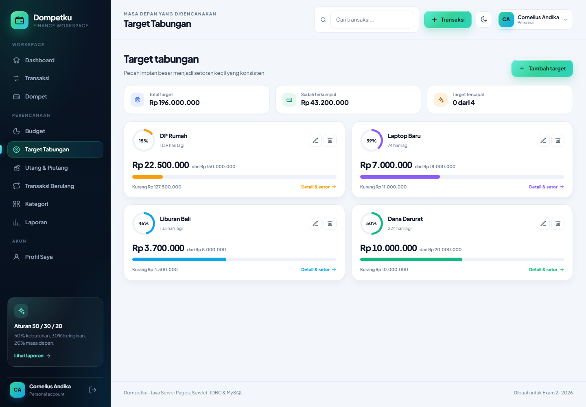
Halaman detail menampilkan progres besar, statistik target, form setoran, dan riwayat
setoran. Menambahkan setoran menjalankan dua operasi dalam satu transaksi database:
insert ke goal_deposits dan update saved_amount. Mengedit
setoran menghitung selisih nominal dan menyesuaikan saved_amount;
menghapus setoran mengembalikan saldo target. Ini adalah contoh CRUD penuh yang
memengaruhi dua tabel.
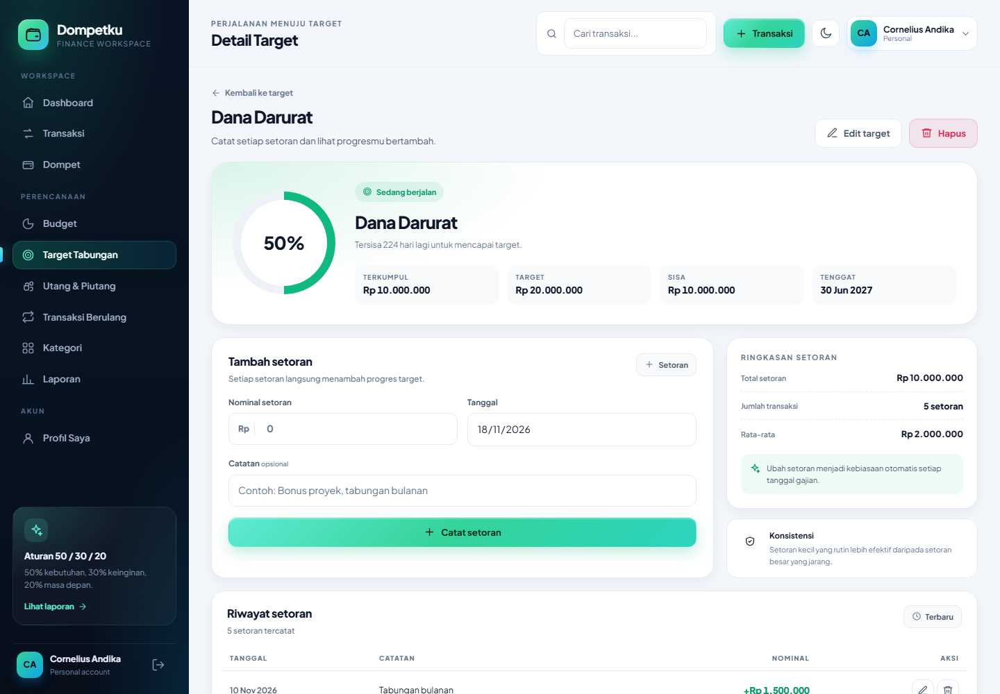
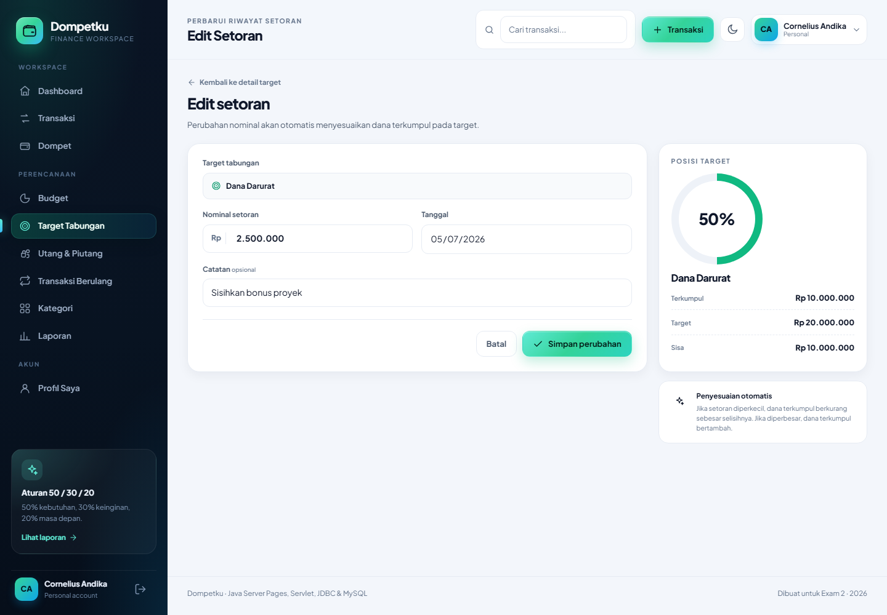
Modul ini mencatat komitmen dua arah: payable (harus dibayar) dan receivable (akan diterima). Status dihitung dari nominal terbayar dan tenggat: belum bayar, sebagian, terlambat, atau lunas. Form pembayaran menerima nominal sebagian dan di-cap pada sisa utang. Filter jenis, status, dan pencarian memudahkan pencarian data.
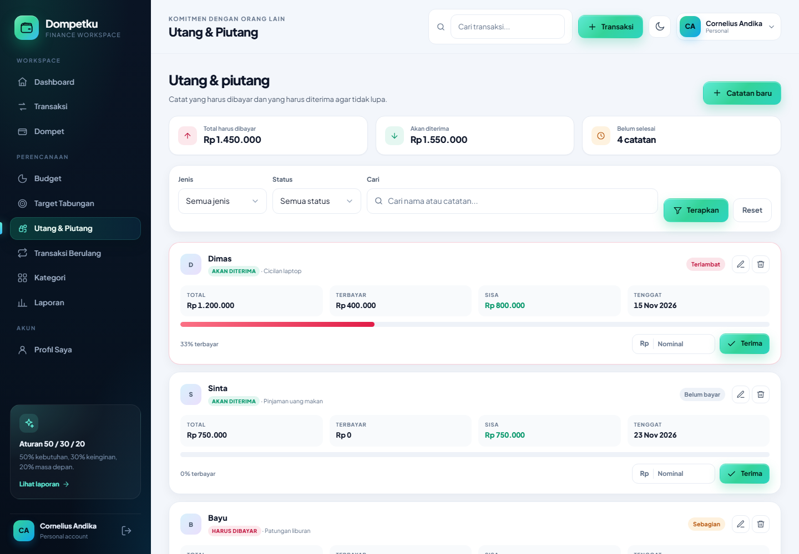
Jadwal berulang menyimpan transaksi rutin seperti kos, langganan, internet, dan gaji.
Pengguna dapat menjeda atau mengaktifkan kembali jadwal. Tombol Jalankan
membuat transaksi pada tanggal jadwal, lalu memajukan next_date sesuai
frekuensi (harian, mingguan, atau bulanan) hingga melewati hari ini.
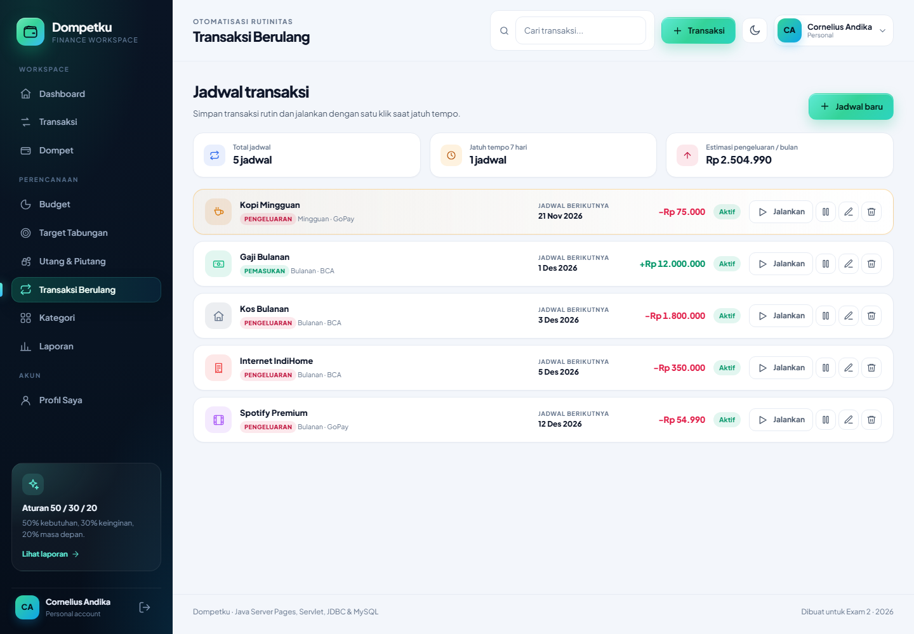
Laporan merangkum pemasukan, pengeluaran, selisih bersih, dan jumlah transaksi. Grafik garis menunjukkan arus kas harian, sedangkan grafik batang membandingkan enam bulan. Komposisi pengeluaran ditampilkan dengan progress bar per kategori. Pengguna dapat mengunduh seluruh transaksi bulan tersebut sebagai CSV untuk Excel, atau ringkasan siap cetak sebagai PDF.
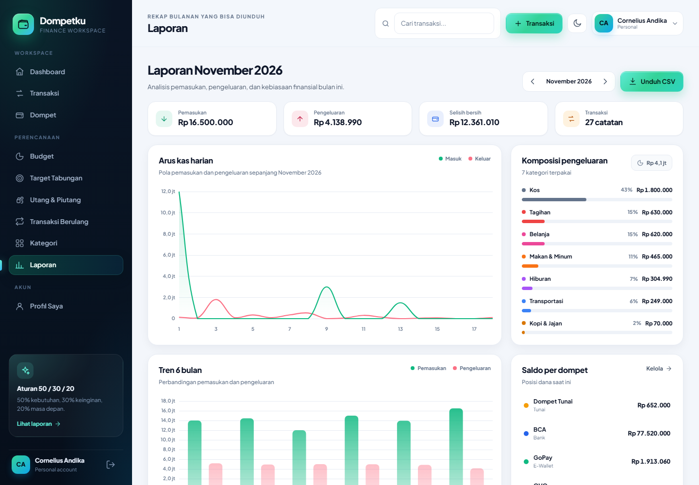
Halaman profil menampilkan identitas, tanggal bergabung, jumlah transaksi/dompet/kategori, serta dua form: ubah nama/email dan ganti password. Perubahan email memeriksa keunikan akun lain. Ganti password memverifikasi password lama, menerapkan aturan minimal 8 karakter dengan huruf, angka, dan simbol, lalu menyimpan hash PBKDF2 yang baru.
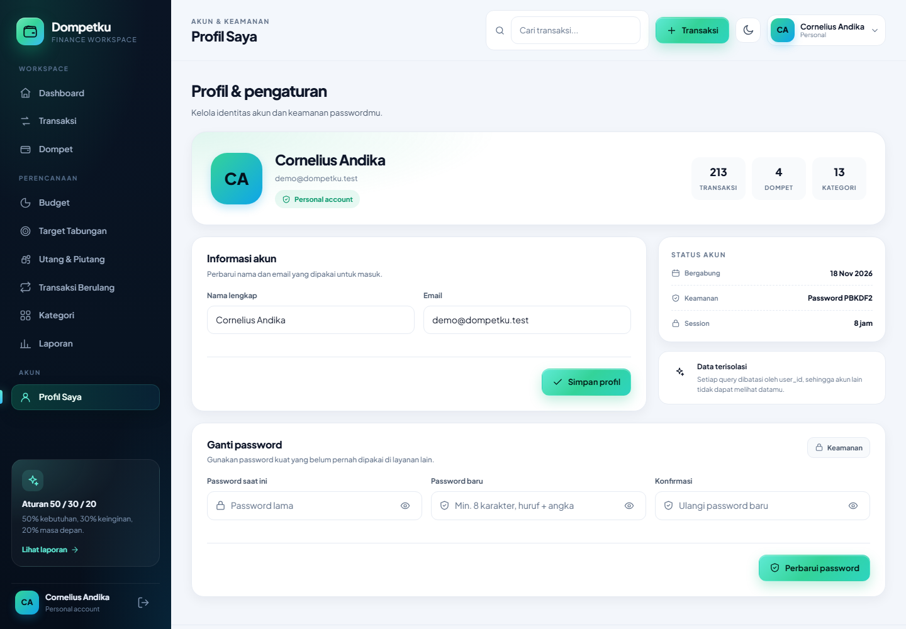
Tema gelap diaktifkan dari tombol di topbar dan disimpan di localStorage.
Seluruh komponen memakai CSS variables sehingga warna permukaan, teks, border, dan
grafik ikut berubah. Layout responsif menyembunyikan sidebar di layar kecil, menampilkan
tombol menu, dan menata ulang kartu menjadi satu kolom.
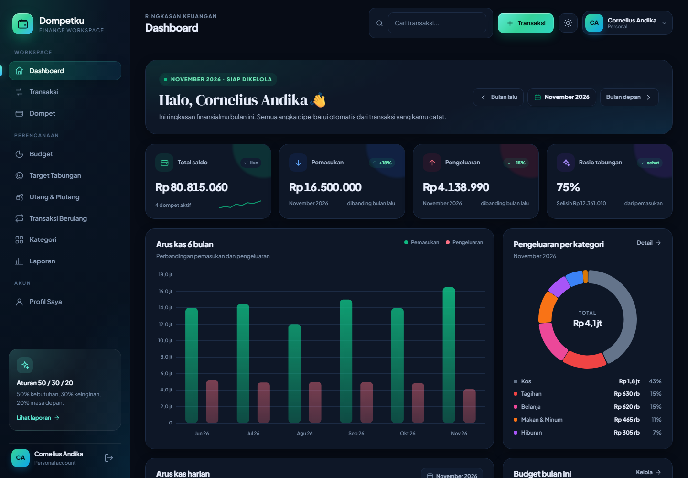
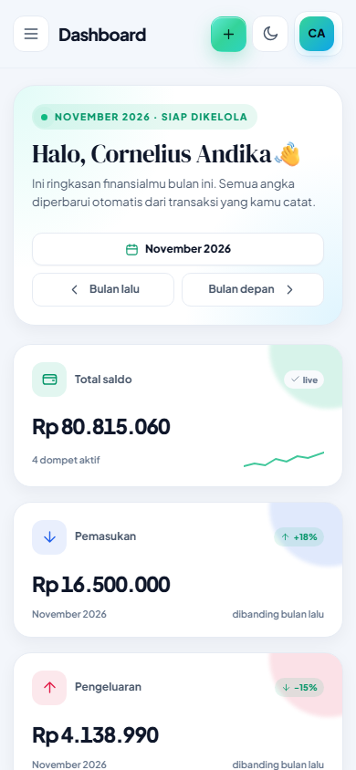
Keamanan aplikasi
Lapisan pertahanan dari form sampai query database.
_csrf. AppFilter membandingkan token secara constant-time dan menolak request tanpa token yang valid dengan HTTP 403./app/* hanya dapat diakses jika session memiliki objek user.
Setiap query DAO menyertakan user_id dari session. Route edit/hapus juga
memeriksa kepemilikan sebelum mengubah data. Dengan demikian, menebak ID milik pengguna
lain tidak cukup untuk membaca atau mengubah data tersebut.
SELECT ... FROM transactions WHERE id = ? AND user_id = ?.
Jika ID ada tetapi bukan milik user, hasilnya null dan halaman mengembalikan 404.
saved_amount dalam satu commit/rollback.f:esc() (HTML entity untuk & < > " '). JSON grafik juga meng-escape <, >, dan & menjadi \u003c, \u003e, \u0026 agar tidak bisa keluar dari tag <script>.Content-Security-Policy membatasi script, style, font, dan frame ke origin sendiri serta Google Fonts.SameSite=Lax dan HttpOnly melalui Rfc6265CookieProcessor.user_id terlebih dahulu; ID milik user lain menghasilkan 404, bukan sukses palsu.X-Content-Type-Options: nosniff,
X-Frame-Options: SAMEORIGIN, Referrer-Policy: strict-origin-when-cross-origin,
dan Content-Security-Policy ditambahkan oleh filter pada setiap respons.
Pengujian
Pengujian dilakukan melalui HTTP terhadap aplikasi yang berjalan, bukan hanya unit test.
Dua skrip pengujian disertakan di folder tools/. smoke_test.py
login lalu membuka 22 halaman dan memastikan tidak ada error server. crud_test.py
menjalankan operasi create/read/update/delete pada setiap modul, memverifikasi hasilnya
langsung ke database MySQL, lalu membersihkan data uji.
| No | Skenario | Hasil |
|---|---|---|
| 1 | Login akun demo dan membuka dashboard | Lulus |
| 2 | 22 halaman terautentikasi merespons HTTP 200 tanpa error JSP | Lulus |
| 3 | Create, update, delete kategori | Lulus |
| 4 | Kategori duplikat dengan nama dan jenis sama ditolak | Lulus |
| 5 | Create, update, delete dompet | Lulus |
| 6 | Dompet dengan transaksi tidak dapat dihapus | Lulus |
| 7 | Create, update nominal, delete transaksi | Lulus |
| 8 | Create, update, delete budget bulanan | Lulus |
| 9 | Create goal, tambah/edit/hapus setoran, update goal, delete goal | Lulus |
| 10 | Setoran menambah saved_amount; edit menyesuaikan selisih; hapus mengembalikannya | Lulus |
| 11 | Create utang, bayar sebagian, ubah tipe, delete | Lulus |
| 12 | Create jadwal berulang, jeda, aktifkan, jalankan, delete | Lulus |
| 13 | Jadwal tertunggak membuat seluruh periode yang terlewat dan memajukan tanggal | Lulus |
| 14 | Registrasi membuat 13 kategori dan 3 dompet default | Lulus |
| 15 | Negative amount, tanggal kosong, dan kategori tidak sesuai ditolak | Lulus |
| 16 | Payload XSS pada kategori dan catatan transaksi ter-escape | Lulus |
| 17 | User lain tidak dapat edit/hapus data (HTTP 404), data tetap utuh | Lulus |
| 18 | POST tanpa CSRF token ditolak dengan HTTP 403 | Lulus |
| 19 | Enam percobaan login gagal berturut-turut dibatasi (HTTP 429) | Lulus |
| 20 | Edit profil, ganti password, dan re-hash password berhasil | Lulus |
Data demo dibuat deterministik oleh tools/generate_seed.py dan dimuat otomatis
saat aplikasi pertama kali dijalankan. Dataset berisi 213 transaksi selama enam bulan
(Juni–November 2026), 13 kategori, 4 dompet, 18 budget, 4 target tabungan,
14 setoran, 5 utang/piutang, dan 5 jadwal berulang.
Cara menjalankan
Semua dependensi sudah disiapkan dalam proyek; hanya perlu XAMPP dan Java.
C:\xampp dengan MySQL dan Apache Tomcat 8.5.D:\code\JDK.C:\Program Files\Java\jre-1.8.
Saat pertama kali dijalankan, AppContextListener membuat database
dompetku, menjalankan schema.sql, dan memuat seed.sql
jika tabel users masih kosong. Database dapat di-reset kapan saja dengan
reset-db.bat. Untuk menghentikan layanan gunakan stop.bat.
pom.xml. Jika Maven
tersedia, jalankan mvn clean package lalu deploy
target/dompetku.war ke Tomcat. Build batch tetap disediakan untuk lingkungan
XAMPP tanpa Maven.
| Properti | Nilai default |
|---|---|
db.host | 127.0.0.1 |
db.port | 3306 |
db.name | dompetku |
db.user | root |
db.password | (kosong) |
Konfigurasi berada di src/main/resources/db.properties dan dapat ditimpa
dengan environment variable DOMPETKU_DB_HOST, DOMPETKU_DB_PORT,
DOMPETKU_DB_NAME, DOMPETKU_DB_USER, dan
DOMPETKU_DB_PASSWORD.
demo@dompetku.test / password.
Login juga bisa dilakukan lewat tombol Isi akun demo otomatis di halaman login.
Pengguna baru dapat mendaftar dan langsung mendapatkan kategori serta dompet awal.
Kesimpulan
Refleksi atas proyek dan langkah berikutnya.
Dompetku JSP berhasil melanjutkan konsep Midterm ke stack Java dengan 8 modul CRUD penuh, 9 tabel relasional, serta antarmuka yang konsisten dan responsif. Seluruh operasi inti telah diuji melalui HTTP dan diverifikasi langsung ke database.
Tantangan utama adalah menjaga konsistensi saldo dan progres ketika data turunan berubah.
Solusinya adalah menghitung saldo dompet dari transaksi (bukan menyimpan saldo mutable)
dan membungkus operasi setoran dalam transaksi database. Tantangan berikutnya adalah
memastikan semua query memiliki batas user_id, yang diselesaikan dengan
pola DAO yang konsisten dan pengecekan kepemilikan sebelum update/delete.
Double-entry agar perpindahan dana tidak dihitung sebagai pemasukan/pengeluaran baru.
Scheduler untuk menjalankan jadwal tanpa klik, dengan idempotensi per tanggal.
Unggah CSV/OFX dan pemetaan kategori otomatis untuk mempercepat pencatatan.
Pengingat ketika realisasi mencapai 80% atau melewati batas.
javax.servlet dan Tomcat 8.5. Untuk Tomcat 10+ perlu migrasi ke jakarta.servlet dan JSTL 3.updated_at; penghapusan data bersifat permanen.